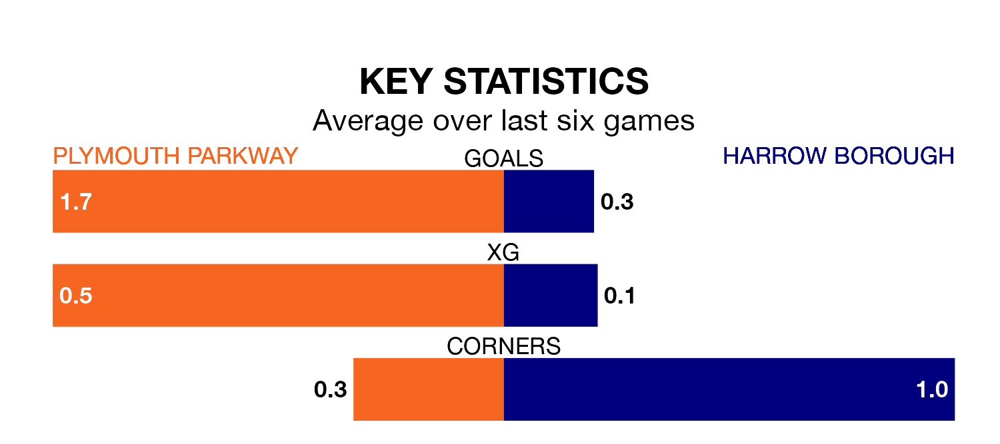

Plymouth Parkway are heavy favourites to keep all three points at home in Saturday's kick-off against Harrow Borough.
Plymouth Parkway, who sit 15th in Southern League Premier South with 23 games played, are priced at 1.5 to seal victory.
Sitting seven places and 16 points behind them in the table, Harrow are 4.9 to win with *Betting Company*, while the draw is at 4.2.
Plymouth Parkway are in mixed form in Southern League Premier South, with two wins and three draws from their last six games.
With no wins and a draw over that period, Harrow's form is much worse – they have taken one point from 18, compared to the home side's nine.
With 31 goals in 27 games so far this season, Borough are the league's second-lowest scorers with 1.1 goals per game. And they are conceding more than average, letting in 64 goals at a rate of 2.4 per game.
Plymouth Parkway, meanwhile, are average scorers, with 1.7 goals per game. They have conceded 1.4 goals per game.
In the last three years, Plymouth Parkway and Harrow have played each other on three occasions. Plymouth Parkway won two of them and Harrow one.
Their last meeting was on September 23, when Harrow won 2-1 at home.
Plymouth Parkway's last match was on Tuesday, a 1-0 loss against Beaconsfield Town.
Harrow drew 1-1 with Hayes and Yeading United last time out, on January 27.
Updated: 15:45 (UTC), 02/02/24